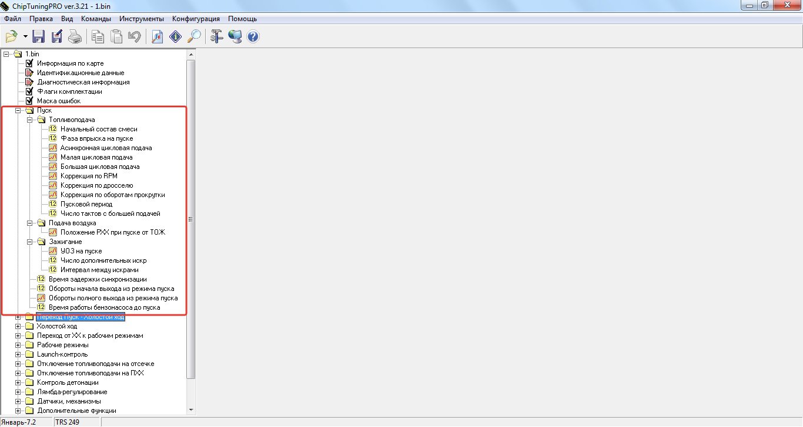

Приветствую друзья!
Тема самостоятельной прошивки обрела статус массовый, и любой желающий без особых проблем в состоянии приобрести оборудование и софт за вменяемые деньги, и стать онлайн-прошивальщиком. Когда продукт становится массовым, то растет конкуренция и появляется большее количество предложений, кто учил экономику — поймет. Так и здесь, прошивальщиков становится море, и многие интуитивно пытаются крутить калибровки, у одних получается хорошо, вторые умудряются развалить мотор и спереть вину на моториста.
Я не эксперт в области прошивки, у меня это как хобби, так что не пинайте если ошибусь, я буду описывать калибровки так, как понимаю сам. На авторство не претендую, информацию старался искать с разных источников, например форум ecusystems.ru, injonl.ru, советы товарищей и конечно же справка CTP.
К сожалению картинок не будет, так как лучше всего при настройке прошивки для первого опыта отталкиваться от сток прошивки под свой мотор. Сравнивая и анализируя можно постараться понять что и как действует. Я понимаю что без картинок запись вряд ли найдет массового читателя, но начинающим должно быть вполне интересно
Описывать буду постепенно каждый этап. Начнем с Пуска.

Пуск — это запуск мотора. Как только вы включили зажигание и сделали первый проворот стартера — это режим пуска. В этом режиме ДМРВ и ДАД не работают и все калибровки топливоподачи настраиваются эмпирически. Как только режим Пуск закончится — то начнут действие "рабочие таблицы", до этих пор расчет топлива будет недоступен. Если утрировать, то пуск в первых секундах похож на работу карбюратора.
При включении зажигания происходит такая последовательность:
1) Включается бензонасос
2) РХХ становится в положение, зависящее от температуры
3) Выставляется фаза впрыска по калибровке
4) Как только начнет вращение двигатель — произойдет асинхронная подача топлива.
5) Через заданное время начнется синхронизация по ДПКВ
6) Происходит отсчет количества циклов, и далее уже ЭБУ будет готовиться перейти в из режима Пуск, в режим Перехода
Пуск — Топливоподача: из названия ясно что в этом подразделе все калибровки отвечают за количество топлива.
Начальный состав смеси — это отправная точка смеси, которая выставляется при включении зажигания. Т.е. этой таблицей мы как бы говорим эбу о примерной смеси в момент запуска мотора. После того как закончится пуск, в силу вступит таблица "состав смеси на хх", но о ней позже.
Фаза впрыска на пуске — здесь указывается фаза в градусах, в какой именно момент форсунка будет впрыскивать топливо. Теория гласит что на холодную лучше всего лить именно в закрытый клапан.
Асинхронная цикловая подача — это первая таблица, которая вступает в работу после первого проворота двигателя. Она табличная, т.е. ЭБУ не рассчитывает количество топлива, которое будет впрыскиваться. Это самая обогащенная таблица. При включении зажигания ЭБУ не знает в каком положении у вас остановился двигатель, и когда запускаете мотор, определенное количество топлива впрыскивается всеми форсунками одновременно чтобы совершить первый запуск, если утрировать, то эбу делает впрыск наугад, чтобы в каком-то из цилиндров произошло возгорание смеси. Если пуск представить в виде этапов, то асинхронная цикловая подача — это первый этап пуска.
Большая цикловая подача — эта таблица вступает сразу после Асинхронной. Эта таблица так же табличная и ЭБУ не участвует в расчете ее. В этой таблице смесь уже беднее чем в асинхронке, но все еще обогащенная. Действие этой таблицы ограничивается калибровками "число тактов с большей подачей" и "обороты начала выхода из пуска" Если пуск представить в виде этапов, то эта таблица — второй этап пуска.
Малая цикловая подача — эта таблица вступает сразу после "Большой цикловой подачи", так же табличная и ЭБУ не участвует в расчете ее. Здесь смесь беднее чем в "большой цикловой подаче", но все еще обогащенная. Действие ее ограничивается калибровками "пусковой период" и "обороты полного выхода из пуска". Если пуск представить в виде этапов, то малая цикловая подача — это третий этап пуска.
Коррекция РПМ — эта таблица отвечает за постепенное обеднение смеси сразу после старта мотора. Это важно для холодного старта, когда велик риск перелить мотор.
Коррекция по дросселю — эта таблица отвечает за границу подачи топлива при нажатии педали газа, если педаль нажата меньше — топливо будет подаваться, если больше — топлива не будет. Это сделано чтобы не залить мотор, если он не сразу заводится.
Коррекция по оборотам прокрутки — если мотор не завелся, и вы вращаете долго стартер, то с каждый следующим тактом будет происходить уменьшение количества топлива чтобы опять же не залить мотор
Пусковой период — это величина указывающая ЭБУ сколько тактов будет пусковыми.
Число тактов с большей подачей — в этой таблице указываете сколько тактов "пускового периода" будет работать "большая цикловая подача". После того как закончится количество тактов с большей подачей, начнется процесс "пускового периода" и начнет работу "малая цикловая подача". Считается примерно так: если у нас пусковой период к примеру 10 тактов, а число тактов с большей подачей 4 к примеру, то 10-4=6. Это значит что 4 такта будет работать "большая цикловая подача", а остальные 6 отвечать будут за "малую цикловую подачу"
Пуск — Подача воздуха: из названия ясно что в этом подразделе будут калибровки отвечающие за количество воздуха, т.е. за положение РХХ.
Положение РХХ от ТОЖ — это количество воздуха, которое регулируется шагами РХХ. Чем больше шагов – тем больше поступает воздуха. Сильнее открытая воздушная щель.
Пуск — Зажигание: в этом подразделе будут калибровки отвечающие за поджигание топлива
УОЗ на пуске — таблица отвечающая за то, какой угол будет у нас в момент проворота стартером.
Время задержки синхронизации – это время после которого ДПКВ начнет считать репер на шкиве, до этого момента он не участвует в работе.
Время работы бензонасоса – время работы насоса при включении зажигания.
Обороты начала выхода из пуска — это обороты, при которых уже обеспечивается нормальное горение смеси. До этих оборотов — работает большая цикловая подача.
Обороты полного выхода из пуска — это обороты до которых работает "малая цикловая подача", а после которых мотор начнет работать не по таблицам, указанным выше, а по ДМРВ или ДАД.
Все выше перечисленные калибровки целиком отвечают за режим пуска. Вроде бы не так и много параметров, а у многих с пуском постоянно возникают проблемы, и чаще всего лишь из-за незнания теории. Если тема будет интересная, я опишу еще переход из Пуска в режим ХХ и частично опишу работу холостого хода, посмотрим, хватит ли у меня опыта это сделать! ;)
Спасибо за прочтение, всех благ!